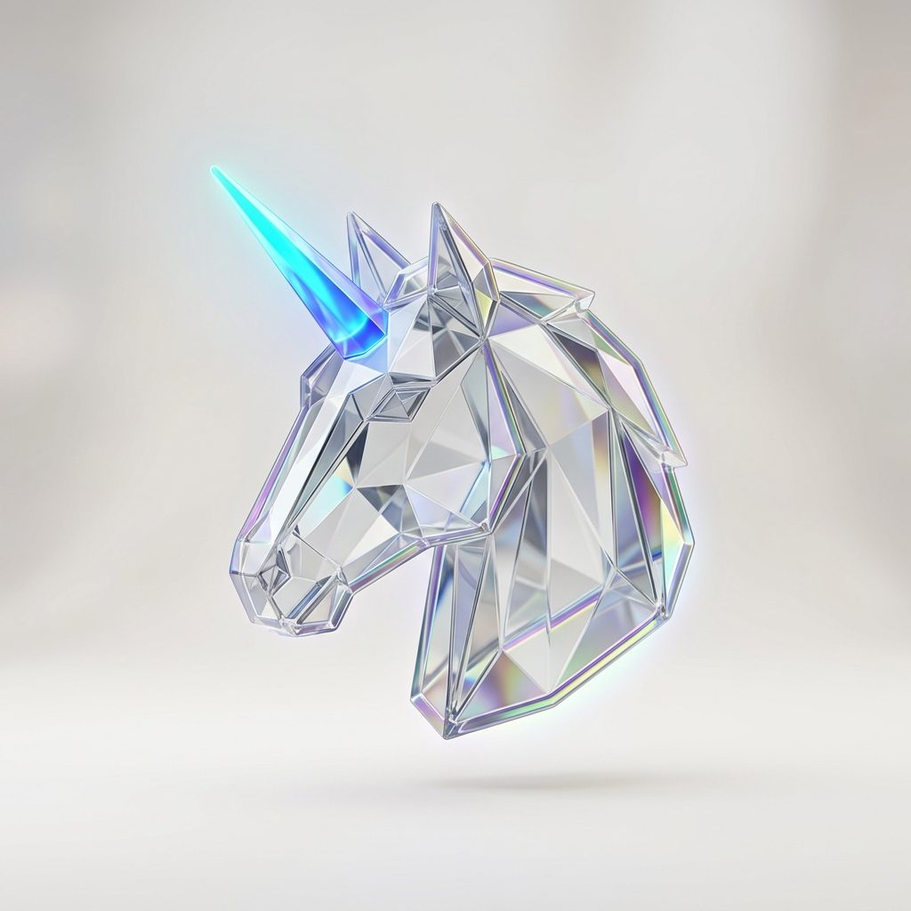

Executive Profile
Nitin Silra
Technical Transformation Lead
Transforming Legacy Platforms into Modern, Simplified & Cost-Effective Solutions
9.5+ Years Exp
Saved $1M+
Modernization
AI Empowered
Hackathon Winner
Strategic Transformation Hub
Nitin Silra

Observability APM
Enterprise Observability
1000+ Services • New Relic
Security Architecture
Kannon Proxy Sidecar
Saved $1M • 9+ Countries
Bank Migration
dbESA-NG Migration
Saved $200K • Multi-Bank Consensus
Mentorship &
Delivery
Fabric 2.0 Mandate
4 Apps Migrated • Saved $250K
Developer Tooling
Safar SSH/SFTP Tool
Cross-Platform • Engineer Ready
Global Innovation
Global AI Hackathons
SEED Microfinance & GROOT AI